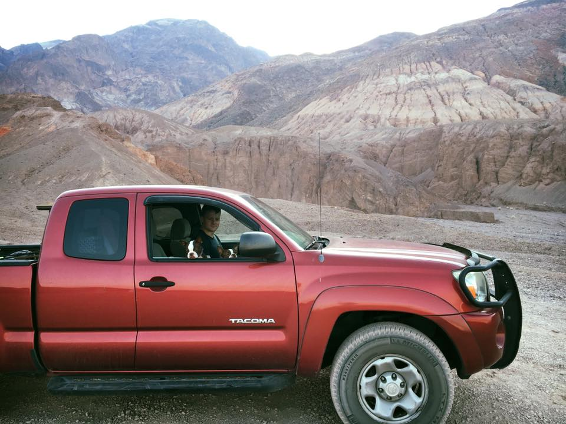
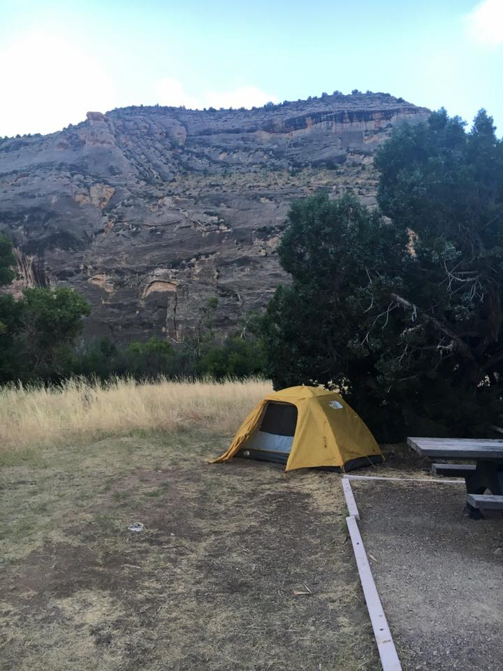

During the first two weeks of August 2016, my wife Claire and I, along with our two dogs Bailey and Cali, went on an amazing trip up and down the west coast. We were able to see many of the great national parks that are our country's treasure. We hope you enjoy looking through our trip and hopefully this helps you plan your own one day!
| Dates and National Parks Visited | ||
|---|---|---|
| Day | Location | |
| 1 | Death Valley | |
| 2 | Grand Canyon | |
| 3 | Zion | |
| 4 | Bryce Canyon and Bridges | |
| 5 | Arches and Dinosaur National Monument | |
| 6 | Grand Tetons | |
| 7 | Yellowstone | |
| 8 | Craters of the Moon | |
| 9 | Mount Hood | |
| 10 | Crater Lake | |
| 11 | Redwoods | |
| 12 | Yosemite | |
We spent each night in our tent with just some blankets and mats. Our trusty steed was my '07 Tacoma which was reliable the entire way, even on some very unforgiving off-road trails. I definitely recommend the North Face Stormbreak 2 tent, as it kept us dry and was very easy to set up and tear down.
 Here is a link to another site, Ultimate West Coast Road Trip, that details a similar trip along the west coast. It's very nicely formatted in many ways; it has a cool banner at the top and has a consistent style throughout with helpful graphics. In my opinion, it could have used more navigation tags to help switch between different sections, but it has a very clean presentation.